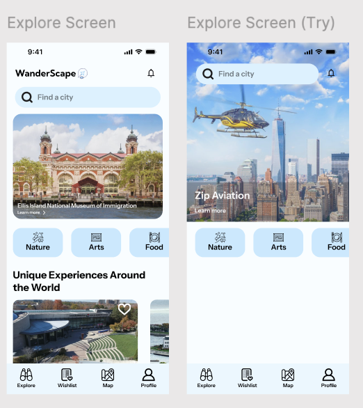
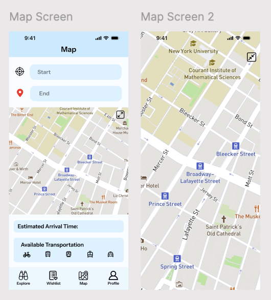
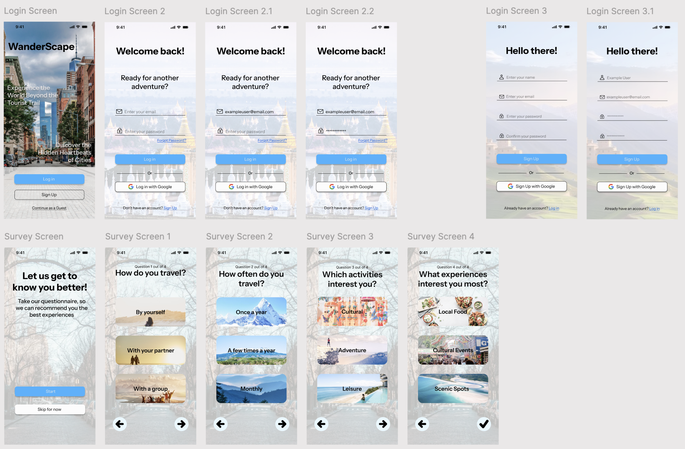
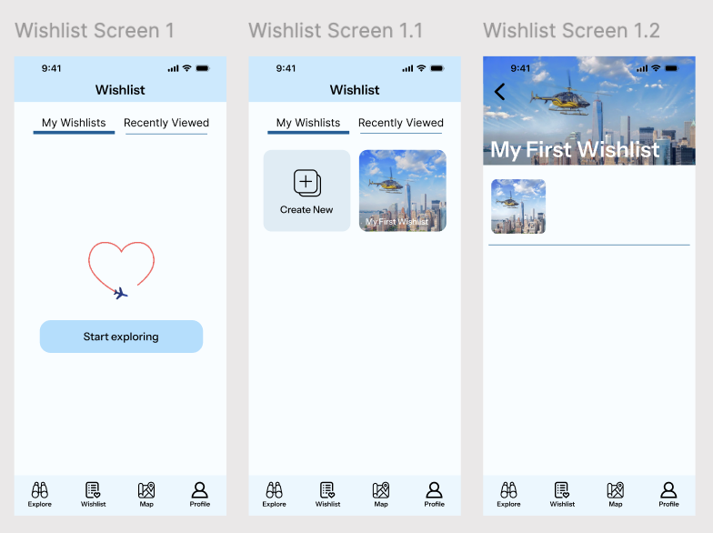

WanderScape is a UX research-led mobile app designed to help travelers discover authentic local experiences beyond the typical tourist trail. The project followed a complete UX process — from surveys and user interviews through competitive analysis, wireframing, high-fidelity design in Figma, and usability testing.
The core insight: popular travel apps create a feedback loop that makes tourism more homogeneous. By surfacing local-guide recommendations, community-sourced spots, and category-based search instead of popularity rankings, WanderScape gives travelers the tools to find the real version of a place.
10 survey respondents and in-depth user interviews revealed patterns that shaped every design decision — from the category filter model to the wishlist empty state.
The complete interactive prototype — from onboarding survey through Explore, Wishlist, Map, and Profile screens. Built in Figma, tested with real users.
WanderScape is a UX research-led mobile app designed to help travelers discover authentic local experiences beyond the typical tourist trail. The project followed a complete UX process over 1 month and 3 weeks — from surveys and user interviews through competitive analysis, wireframing, high-fidelity design, and usability testing.
The core insight driving WanderScape: popular travel apps create a feedback loop that makes tourism more homogeneous, not more personal. By surfacing local-guide recommendations and vibe-based search instead of popularity rankings, WanderScape gives travelers the tools to find the real version of a place.
Core Thesis: The best UX for travel isn't optimizing for the popular — it's making the authentic discoverable.
Three directions for WanderScape's next iteration, based on research findings and usability testing.
The most important finding from this project wasn't about features — it was about trust. Users don't distrust travel apps because the information is wrong. They distrust them because the information feels optimized for someone else's interests, not theirs.
Key Takeaway: The best UX for discovery isn't the most efficient path to a booking — it's the experience that makes a traveler feel like they found something nobody else knows about. That feeling of discovery is the product.
WanderScape is organized into four core tabs, each designed to support a distinct phase of how travelers plan and experience a destination — all rooted in what the research revealed about real traveler behavior.




Every major design decision traces back to a specific research finding. Here's how the data shaped the product.
The complete WanderScape prototype and research documentation — all in Figma.